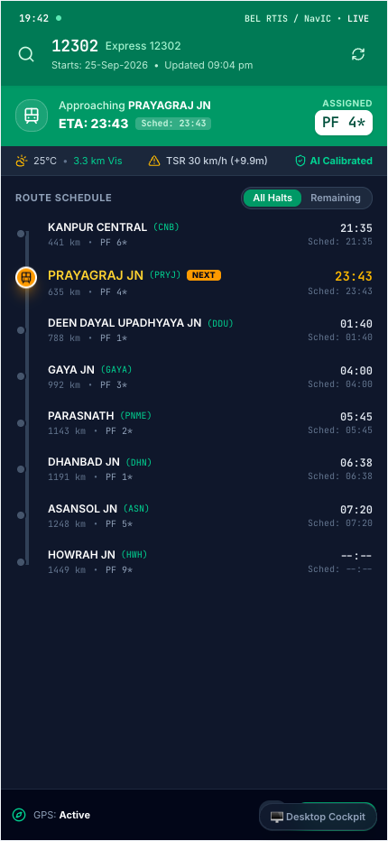

⚡ End-to-End User & System Flow
Traveler & Controller Flow
1. User Opens GATI-SETU App
Mobile / Web
Traveler on train/station opens clean "Where Is My Train" style app
2. Search Train # or GPS Geofence
Auto-Detect
Enter #12302 (Rajdhani) or GPS auto-detects nearest railway corridor
3. 30s BEL RTIS NavIC Satellite Ingress
Zero-Hardware
Ingests live locomotive MSS transponder GPS + CRIS COA block state
YES: Newton Dead-Reckoning
RK4 solver computes displacement
NO: PostGIS 1D Rail-Snap
Snaps GPS to track chainage KM
5. Dynamic Kinematics + PyG ST-GAT Core
Dual AI Engine
WAP-7 tractive curve physics fused with spatio-temporal graph attention
Nominal: 4-Aspect Green Wave
130 km/h corridor lock; on time
Conflict: Rule 401 Siding
Loops freight; Express recovers 22m
7. Calibrated ETA [P10-P90] & Coach Guide
Live Display
Live arrival window, platform #4*, coach formation & causal reason badge
8. 1-Tap Cab & Metro Sync • Journey Done
Seamless
Pre-timed Ola/Uber dispatch to platform touchdown; zero wait, zero panic
⚡ Core Architecture & Live Working Prototype
Tested Live • Zero Engine Hardware Required

🚆 Working Mobile Passenger Prototype
🛰️ Statutory Ground Feeds (100% Zero-Hardware)
Ingestion Layer
Taps existing BEL RTIS NavIC 30s satellite GPS transponders on locos + CRIS COA interlocking block occupancy and e-Caution TSR temporary speed restrictions.
📍 PostGIS 1D LRS & Newton-Davis Kinematics
Physics Engine
Snaps raw 2D WGS84 GPS drift to 1D track chainage KM. Runge-Kutta 4th-order ODE solver models tractive effort curves (WAP-7 6350HP), brake deceleration & 1:120 ruling gradients.
a(t) = [F_trac(v) - R_davis(v) - F_grade] / M_effective
🧠 PyG Spatio-Temporal Graph Attention (ST-GAT)
AI Core
Models the entire railway corridor as a dynamic spatio-temporal graph. Multi-head cross-train attention captures downstream ripple delays across interconnected stations up to 150 km ahead.
α_ij = Softmax(LeakyReLU(a^T [Wh_i || Wh_j]))
🎯 Inductive Conformal Uncertainty Calibration
Certified [P10-P90]
Replaces unreliable single-point arrival estimates with a certified 90% non-parametric confidence window (23:40 – 23:46), resilient to fog, crossings & signal halts.
🚦 Multi-Stakeholder Operational Synchronization
Dispatch Engine
Rule 401 Siding Engine automatically loops low-priority freight to sidings (recovering ~22m delay for express trains) • Syncs with Station Master CIDS platform LED and audio displays.